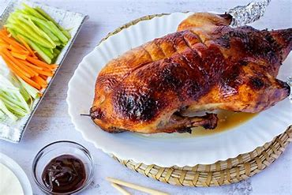
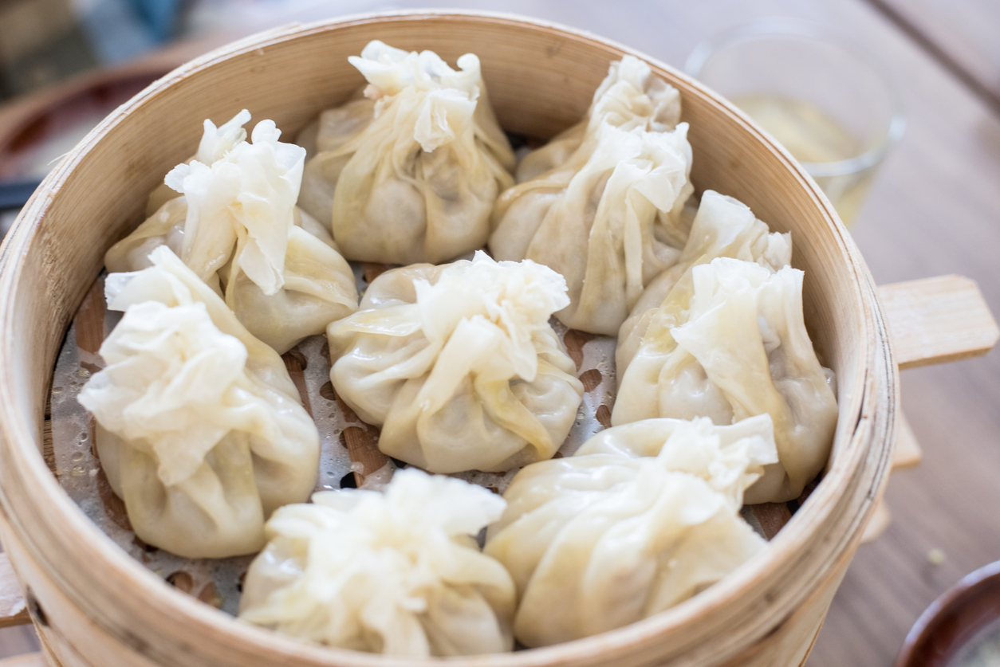
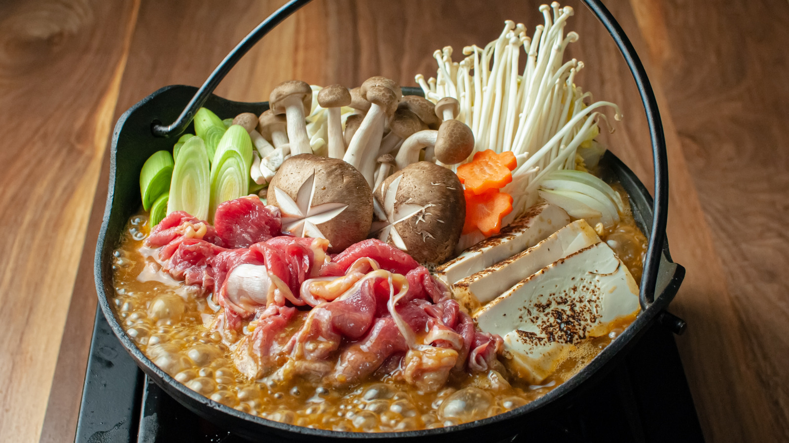

Pato a la Pekinesa

El pato a la pekinesa es un plato gourmet que puedes preparar en casa para ocasiones especiales. Lograr la textura perfecta, dorada y crujiente tiene sus trucos. En la cocina china, las recetas con pato son bastante populares al tener una carne muy jugosa y tierna. Si te gusta probar recetas de carne de todos los países del mundo, en Cocina Casera te contamos cómo elaborar el pato a la pekinesa.
Dim Sum

Los Dim Sum son esas empanadillas chinas rellenas de carne que se cocinan al vapor. Por eso, cuando recibí mi nueva cesta vaporera de Zwilling tenía claro que la estrenaría con mi propia receta de Dim Sum caseros.
Y aunque es cierto que me inspiré en la receta de Dumplings de Jamie Oliver en «Ahorra con Jamie«, la suya emplea carne ya cocinada, mientras que yo uso carne cruda que se cocina al vapor al mismo tiempo que la masa. Así, los Dim Sum quedan mucho más jugosos.
Hot Pot

El hot pot, cuyo nombre original es huoguo o también conocida como fondue china, es un plato chino que se originó en la región de Sichuan, aunque ahora es popular en toda China y en otros países de Asia. Consiste en una olla llena de caldo aromatizado y especiado que se coloca en el centro de la mesa y se mantiene caliente.